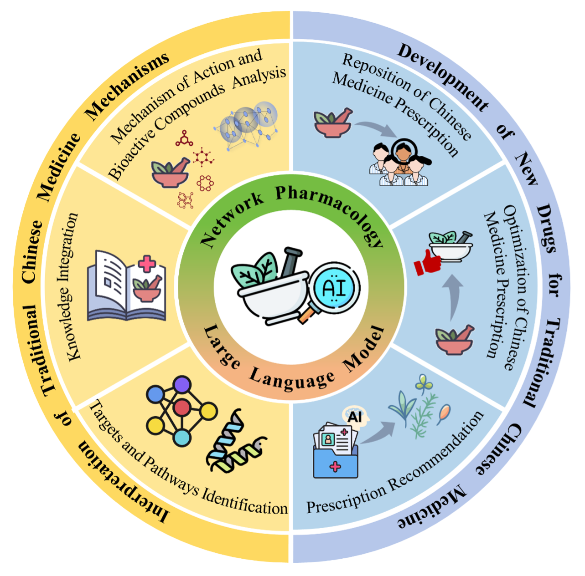

Selected Publications
Transfer Learning and Permutation-Invariance improving Predicting Genome-wide,
Cell-Specific and Directional Interventions Effects of Complex Systems
Boyang
Wang, Boyu Pan, Yingyu Zhang, Qingyuan Liu, Shao Li
Advanced Science, 2025.
Paper

Revealing the Mechanisms of Compound Kushen Injection on Oxidative Stress Regulation in
the Treatment of Radiation-Induced Lung Injury
Boyang
Wang, Defei Kong, Zhiru Yang, Jun Kang, Deyang Sun, Xiumei Duan, Tingyu Zhang,
Qingyuan Liu, Hui Yin, Kun Li, Shao Li
Engineering, 2025.
Paper
Revolutionizing Drug Discovery from Natural Products: The Roles of Artificial
Intelligence and Multi-Omics in Accelerating Innovation
Boyang
Wang*, Qingyuan Liu*, Tingyu Zhang, Weibo Zhao, Dingfan Zhang, Chayanis
Sutcharitchan, Shao Li
* indicates equal contribution.
Acta Pharmaceutica Sinica B, 2025.
Paper
Leveraging Network Target Theory for Efficient Prediction of Drug‐Disease Interactions:
A Transfer Learning Approach
Qingyuan Liu*, Zizhen Chen*, Boyang
Wang*, Boyu Pan*, Zhuoyu Zhang, Miaomiao Shen, Weibo Zhao, Tingyu Zhang, Shao Li,
Liren Liu
* indicates equal contribution.
Advanced Science, 2025.
Paper
A computational-based new treatment strategy with three-armed RCT on Mycoplasma
pneumoniae pneumonia in children
Chengliang Zhong*, Qingyuan Liu*, Shengxuan Guo*, Deyang Sun*, Boyang Wang*, Siyuan Hu, Xinmin Li, Weibo Zhao,
Ying Ding, Bin Yuan, Jing Liu, Long Xiang, Nan Li, Zheng Xue, Yan Li, Yiqun Teng, Rongsong Yi,
Shao Li, Rong Ma.
* indicates equal contribution.
Chinese Medicine, 2025.
Paper

Network Pharmacology: Facilitating the Application of Large Language Models in
Traditional Chinese Medicine Research
Qingyuan Liu*, Dingfan Zhang*, Boyang
Wang*, Weibo Zhao, Tingyu Zhang, Chayanis Sutcharitchan, Shao Li
* indicates equal contribution.
Science of Traditional Chinese Medicine, 2025.
Paper
Comparison of Jinzhen Oral Liquid and Ambroxol Hydrochloride and Clenbuterol
Hydrochloride Oral Solution in the Treatment of Acute Bronchitis in Children: A Multicenter,
Non-inferiority, Prospective, Randomized Controlled trial
Qinhua Fan*, Chongming Wu*, Yawei Du*, Boyang
Wang*, Yanming Xie, Zeling Zhang, Wenquan Su, Zizhuo Wang, Changchang Xu, Xueke Li,
Ying Ding, Xinjiang An, Jing Chen, Yunying Xiao, Rong Yu, Nan Li, Juan Wang, Yiqun Teng, Hongfen
Lv, Nian Yang, Yuling Wen, Xiaoli Huang, Wei Pan, Yufeng Liu, Xueqin Xi, Qianye Zhao, Changshan
Liu, Jian Xu, Haitao Zhang, Lie Zhuo, Qiangquan Rong, Yu Xia, Qin Shen, Shao Li, Junhong Wang,
Shengxian Wu
* indicates equal contribution.
Acta Pharmaceutica Sinica B, 2024.
Paper
Elucidating the role of artificial intelligence in drug development from the perspective
of drug-target interactions
Boyang Wang*, Tingyu Zhang*, Qingyuan Liu*,
Chayanis Sutcharitchan, Ziyi Zhou, Dingfan Zhang, Shao Li
* indicates equal contribution.
Journal of Pharmaceutical Analysis, 2024.
Paper
Uncovering the role of traditional Chinese medicine in immune-metabolic balance of
gastritis from the perspective of Cold and Hot: Jin Hong Tablets as a case
study
Boyang Wang*, Lihao Xiao*, Pan Chen*, Tingyu
Zhang, Peng Zhang, Liang Cao, Ziyi Zhou, Haibo Cheng, Tong Zhang, Shao Li
* indicates equal contribution.
Chinese Medicine, 2024.
Paper

Exploring the effect of Weifuchun capsule on the toll-like receptor pathway mediated
HES6 and immune regulation against chronic atrophic gastritis
Boyang Wang*, Wuai Zhou*, Huan Zhang*, Weihua
Wang, Bo Zhang, Shao Li
* indicates equal contribution.
Journal of Ethnopharmacology, 2023.
Paper
Uncovering the mechanisms of Yi Qi Tong Qiao Pill in the treatment of allergic rhinitis
based on Network target analysis
Boyang Wang, Dingfan Zhang, Tingyu Zhang,
Chayanis Sutcharitchan, Jianlin Hua, Dongfang Hua, Bo Zhang, Shao Li
Chinese Medicine, 2023.
Paper

Biological mechanism of Traditional Chinese Medicine Formula and Herbs in Treating
Diseases from the perspective of Cold and Hot
Boyang Wang, Pan Chen, Peng Zhang, Shao Li
World Journal of Traditional Chinese Medicine, 2024.
Paper